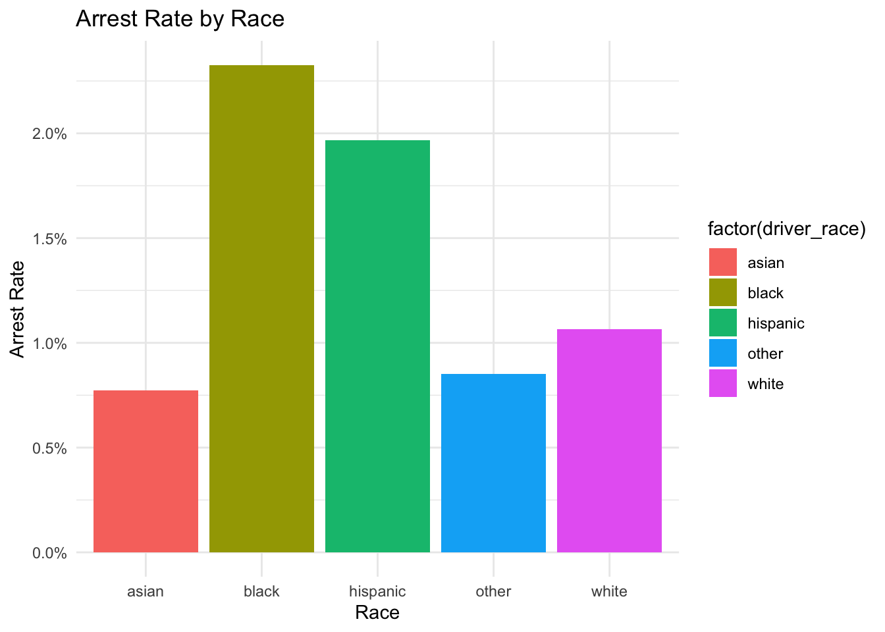

This week we finished implementing the data from San Francisco into our data set. In addition, we performed preliminary EDA on the San Francisco data by implementing the visualization and modeling methods used earlier. The complete data set with both the SF and RI data is generated through "load_and_clean_data2.R"
source("scripts/load_and_clean_data2.R")
── Attaching core tidyverse packages ──────────────────────── tidyverse 2.0.0 ──
✔ dplyr 1.1.4 ✔ readr 2.1.5
✔ forcats 1.0.0 ✔ stringr 1.5.1
✔ ggplot2 3.5.1 ✔ tibble 3.2.1
✔ lubridate 1.9.3 ✔ tidyr 1.3.1
✔ purrr 1.0.2
── Conflicts ────────────────────────────────────────── tidyverse_conflicts() ──
✖ dplyr::filter() masks stats::filter()
✖ dplyr::lag() masks stats::lag()
ℹ Use the conflicted package (<http://conflicted.r-lib.org/>) to force all conflicts to become errors
Joining with `by = join_by(stop_date, stop_time, driver_gender, driver_race, violation, search_conducted, search_type, stop_outcome, is_arrested, stop_duration, drugs_related_stop, district, state)`
full_traffic_data_clean|>head(10)
# A tibble: 10 × 13
stop_date stop_time driver_gender driver_race violation search_conducted
<date> <chr> <chr> <chr> <chr> <lgl>
1 2005-01-04 12:55:00 M white Equipment FALSE
2 2005-01-23 23:15:00 M white Speeding FALSE
3 2005-02-17 04:15:00 M white Speeding FALSE
4 2005-02-20 17:15:00 M white Other FALSE
5 2005-02-24 01:20:00 F white Speeding FALSE
6 2005-03-14 10:00:00 F white Speeding FALSE
7 2005-03-29 21:55:00 M white Speeding FALSE
8 2005-04-04 21:25:00 M white Speeding FALSE
9 2005-07-14 11:20:00 F white Speeding FALSE
10 2005-07-14 19:55:00 M white Speeding FALSE
# ℹ 7 more variables: search_type <chr>, stop_outcome <chr>, is_arrested <lgl>,
# stop_duration <chr>, drugs_related_stop <lgl>, district <chr>, state <chr>
Below, you can see our code for modeling the likelihood of arrest by certain factors for our SF data alone. We can observe a noticeable difference in this model’s performance compared to the RI model; Race does not play as significant a role in predicting the probability of arrest here.
model <-glm(is_arrested ~ driver_race + driver_gender + stop_date + district,data = sf_traffic_data_clean, family = binomial)summary(model)
Intercept: the positive coefficient of the intencept(6.772e-01) suggests that when all other predictors are at their baseline, the log-odds of an arrest are positive, implying a higher baseline probability of arrest.
Driver_race: The coefficient (1.457e-02, p = 0.0321) indicates a weak but statistically significant positive association between race as a factor and the likelihood of arrest.
Driver_gender: The coefficient (-4.527e-01, p < 0.001) for driver_gender suggests a statistically significant negative relationship between being female and the likelihood of arrest, meaning male drivers have higher odds of being arrested.
Stop_dates: The coefficient (-3.312e-04, p < 0.001) indicates a very small but statistically significant decrease in the likelihood of arrest over time.
District: The coefficient (7.004e-03, p = 0.0409) suggests a significant positive association between district variations and the likelihood of arrest.
Statistical Significance:
The model’s p-values show that most predictors are statistically significant (p < 0.05), indicating they have significant relationships with the likelihood of arrest.
Model Performance:
AIC (115620): The Akaike Information Criterion (AIC) suggests a reasonably good fit for the data, with lower values indicating better model performance.
Residual Deviance (115610) vs. Null Deviance (117053): The reduction in deviance highlights the model’s ability to explain variance in the response variable compared to an intercept-only model.
Interpretation:
The analysis underscores the role of race, gender, and geographic location in predicting arrest probability, with significant contributions from male gender and specific districts. The trends in stop_date further highlight potential temporal patterns in arrests. While the model fits the data well, disparities in predictive factors warrant further investigation.
Below are some graphs to visualize the raw San Francisco data. As seen below, this data includes a much larger proportion of black and hispanic drivers compared to the RI data, and Blacks seem to be given warnings with a slightly higher proportion than other races:
arrest_rates <- sf_traffic_data_clean %>%group_by(driver_race) %>%summarize(arrest_rate =mean(is_arrested, na.rm =TRUE)) ggplot(arrest_rates, aes(x =factor(driver_race), y = arrest_rate, fill =factor(driver_race))) +geom_bar(stat ="identity") +labs(title ="Arrest Rate by Race", x ="Race", y ="Arrest Rate") +scale_y_continuous(labels = scales::percent) +theme_minimal()

race_stop_counts <- sf_traffic_data %>%count(subject_race, raw_result_of_contact_description)ggplot(race_stop_counts, aes(x =factor(subject_race), y = n, fill = raw_result_of_contact_description)) +geom_bar(stat ="identity", position ="fill") +labs(title ="Distribution of Stop Results by Race", x ="Race", y ="Proportion") +scale_y_continuous(labels = scales::percent) +theme_minimal()